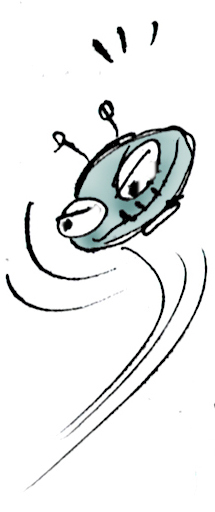
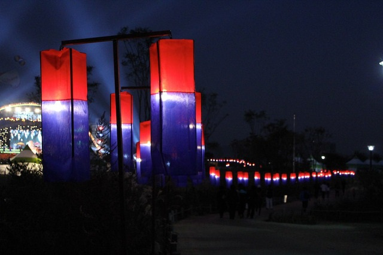
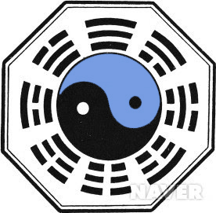
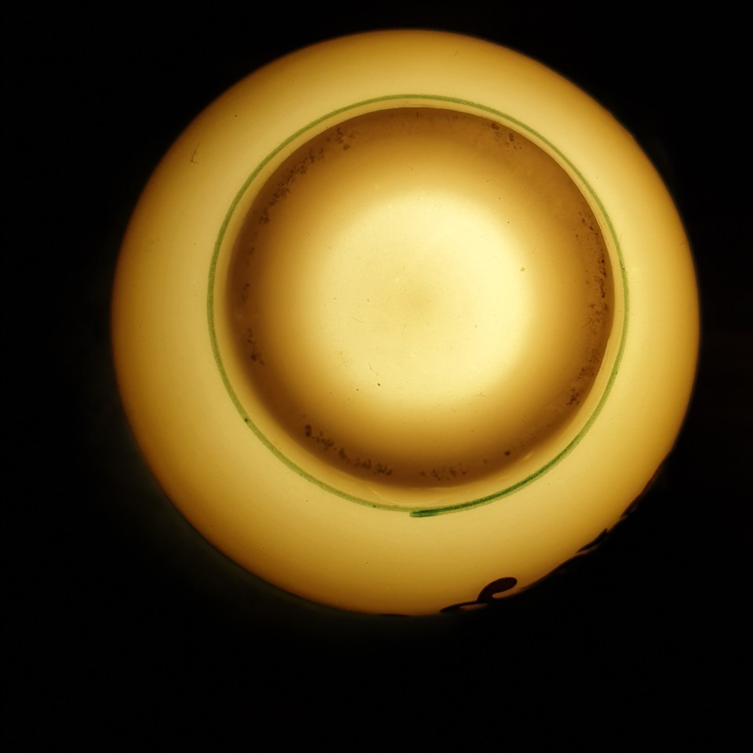

응애 소리
목차
1장:1절 응애, 그리고 응애...


하나님(천자:황제)의 주관심사는 서민의 행복인데, 내부內府관리와 세도가들이 결탁하여 황제에게 반역을 했다. 이 책 2장에 등장하는 쌤, 마오, 스탈 등 패거리들은 살아있는 황제의 상징(十)을 죽은 자의 하나님으로 만들어 엉터리 종교와 공산주의를 세상에 퍼뜨렸다. 황제가 잠적하여 미래인류행복을 위해 과학과 예술의 시대를 준비하는 동안, 패권주의를 지향하는 비밀조직의 빅브라더는 ‘글로벌리스트’를 사칭하며 서민의 행복을 강탈했다.

하나님(천자:황제)의 주관심사는 서민의 행복인데, 내부內府관리와 세도가들이 결탁하여 황제에게 반역을 했다. 이 책 2장에 등장하는 쌤, 마오, 스탈 등 패거리들은 살아있는 황제의 상징(十)을 죽은 자의 하나님으로 만들어 엉터리 종교와 공산주의를 세상에 퍼뜨렸다. 황제가 잠적하여 미래인류행복을 위해 과학과 예술의 시대를 준비하는 동안, 패권주의를 지향하는 비밀조직의 빅브라더는 ‘글로벌리스트’를 사칭하며 서민의 행복을 강탈했다.

하나님(천자:황제)의 주관심사는 서민의 행복인데, 내부內府관리와 세도가들이 결탁하여 황제에게 반역을 했다. 이 책 2장에 등장하는 쌤, 마오, 스탈 등 패거리들은 살아있는 황제의 상징(十)을 죽은 자의 하나님으로 만들어 엉터리 종교와 공산주의를 세상에 퍼뜨렸다. 황제가 잠적하여 미래인류행복을 위해 과학과 예술의 시대를 준비하는 동안, 패권주의를 지향하는 비밀조직의 빅브라더는 ‘글로벌리스트’를 사칭하며 서민의 행복을 강탈했다.
하나님(천자:황제)의 주관심사는 서민의 행복인데, 내부內府관리와 세도가들이 결탁하여 황제에게 반역을 했다. 이 책 2장에 등장하는 쌤, 마오, 스탈 등 패거리들은 살아있는 황제의 상징(十)을 죽은 자의 하나님으로 만들어 엉터리 종교와 공산주의를 세상에 퍼뜨렸다. 황제가 잠적하여 미래인류행복을 위해 과학과 예술의 시대를 준비하는 동안, 패권주의를 지향하는 비밀조직의 빅브라더는 ‘글로벌리스트’를 사칭하며 서민의 행복을 강탈했다.
하나님(천자:황제)의 주관심사는 서민의 행복인데, 내부內府관리와 세도가들이 결탁하여 황제에게 반역을 했다. 이 책 2장에 등장하는 쌤, 마오, 스탈 등 패거리들은 살아있는 황제의 상징(十)을 죽은 자의 하나님으로 만들어 엉터리 종교와 공산주의를 세상에 퍼뜨렸다. 황제가 잠적하여 미래인류행복을 위해 과학과 예술의 시대를 준비하는 동안, 패권주의를 지향하는 비밀조직의 빅브라더는 ‘글로벌리스트’를 사칭하며 서민의 행복을 강탈했다.

하나님(천자:황제)의 주관심사는 서민의 행복인데, 내부內府관리와 세도가들이 결탁하여 황제에게 반역을 했다. 이 책 2장에 등장하는 쌤, 마오, 스탈 등 패거리들은 살아있는 황제의 상징(十)을 죽은 자의 하나님으로 만들어 엉터리 종교와 공산주의를 세상에 퍼뜨렸다. 황제가 잠적하여 미래인류행복을 위해 과학과 예술의 시대를 준비하는 동안, 패권주의를 지향하는 비밀조직의 빅브라더는 ‘글로벌리스트’를 사칭하며 서민의 행복을 강탈했다.

하나님(천자:황제)의 주관심사는 서민의 행복인데, 내부內府관리와 세도가들이 결탁하여 황제에게 반역을 했다. 이 책 2장에 등장하는 쌤, 마오, 스탈 등 패거리들은 살아있는 황제의 상징(十)을 죽은 자의 하나님으로 만들어 엉터리 종교와 공산주의를 세상에 퍼뜨렸다. 황제가 잠적하여 미래인류행복을 위해 과학과 예술의 시대를 준비하는 동안, 패권주의를 지향하는 비밀조직의 빅브라더는 ‘글로벌리스트’를 사칭하며 서민의 행복을 강탈했다.

하나님(천자:황제)의 주관심사는 서민의 행복인데, 내부內府관리와 세도가들이 결탁하여 황제에게 반역을 했다. 이 책 2장에 등장하는 쌤, 마오, 스탈 등 패거리들은 살아있는 황제의 상징(十)을 죽은 자의 하나님으로 만들어 엉터리 종교와 공산주의를 세상에 퍼뜨렸다. 황제가 잠적하여 미래인류행복을 위해 과학과 예술의 시대를 준비하는 동안, 패권주의를 지향하는 비밀조직의 빅브라더는 ‘글로벌리스트’를 사칭하며 서민의 행복을 강탈했다.
하나님(천자:황제)의 주관심사는 서민의 행복인데, 내부內府관리와 세도가들이 결탁하여 황제에게 반역을 했다. 이 책 2장에 등장하는 쌤, 마오, 스탈 등 패거리들은 살아있는 황제의 상징(十)을 죽은 자의 하나님으로 만들어 엉터리 종교와 공산주의를 세상에 퍼뜨렸다. 황제가 잠적하여 미래인류행복을 위해 과학과 예술의 시대를 준비하는 동안, 패권주의를 지향하는 비밀조직의 빅브라더는 ‘글로벌리스트’를 사칭하며 서민의 행복을 강탈했다.
왜 “응애”인가?
“응애”는 내안의 하나님(천자:황제)과 1:1 대응관계이다.
“응애”는 내가 탄생하는 울음소리이다. 내가 태어나면서 비로소 역사가 시작되는 것이다. 역사는 내안의 하나님과의 1:1 대응관계이다. 하나님(천자:황제)의 존재여부는 나의 영성(Sprit)의 존재유무와 연결된다.
하나님(천자:황제)의 ‘엑스칼리버’
“응애”는 내안의 하나님(천자:황제)과 1:1 대응관계이다.
하나님(천자:황제)의 주관심사는 서민의 행복인데, 내부內府관리와 세도가들이 결탁하여 황제에게 반역을 했다. 이 책 2장에 등장하는 쌤, 마오, 스탈 등 패거리들은 살아있는 황제의 상징(十)을 죽은 자의 하나님으로 만들어 엉터리 종교와 공산주의를 세상에 퍼뜨렸다. 황제가 잠적하여 미래인류행복을 위해 과학과 예술의 시대를 준비하는 동안, 패권주의를 지향하는 비밀조직의 빅브라더는 ‘글로벌리스트’를 사칭하며 서민의 행복을 강탈했다.
하나님은 영생원자 안에 나와 함께 존재했다.
최근 세계사를 날조하고, 살아있는 하나님(十)을 죽은 자의 하나님(♀)으로 만들었던 ‘글로벌리스트’가 지구촌 곳곳에서 무너져 내렸다.
내 몸에 존재하는 무량계수의 원자운동
저자는 우주탄생 빅뱅을 인간배란 시에 영생원자가 우리 몸에 빛보다 빠르게 발생한다는 원리에 비유한다. 즉 죽음으로 전자를 잃은 인간영생원자핵이 새로운 전자를 받아 다시 태어나려면, 우주탄생의 중성자블랙홀의 빅뱅처럼 초고속의 찰라 운동에너지가 존재해야한다. 이와 같이 새로운 생명체의 윤회프로세스를 뽀미라는 복제인간을 통해 증명하고 있다.
‘영생원자의 소우주’ (중성자블랙홀)
“응애”는 내안의 하나님(천자:황제)과 1:1 대응관계이다.
마치 원자핵에서 미자폭풍이 끝나고 제2차 “빅뱅”으로 새로운 생명이 태어나듯이, 하나님의 영이 머무는 ‘중성자 소우주’의 비밀이 풀리며 영생원자의 최초의 진동이 하나님의 말씀이었다는 것을 알게 되었다.